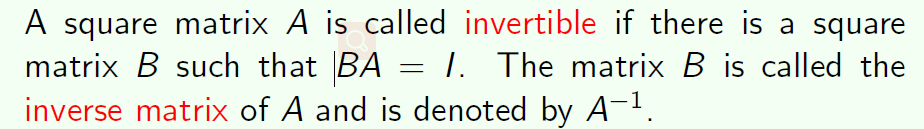
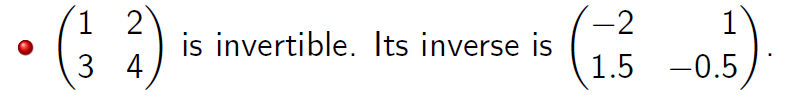
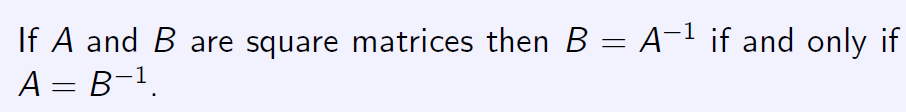
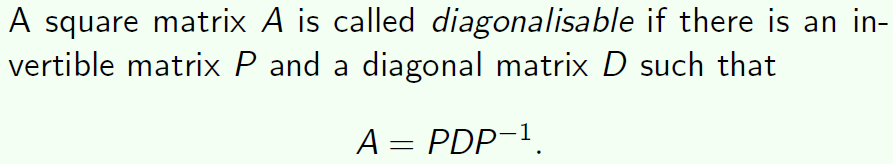
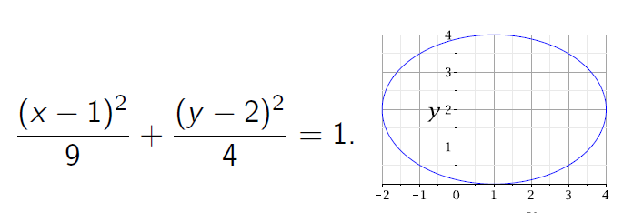

Linear algebra
Linear algebra:线性代数 Vectors 向量 Norm 向量的模 Orthogonal vectors 正交矢量 Gaussian elimination 高斯消元法 Identity matrices单位矩阵 Matrix inverse 逆矩阵    Det(A)≠0， 才有逆矩阵 找逆矩阵： Eigenvalues 特征值 Eigenvector 特征向量 Ax = λx (x特征向量，λ特征值) 不含零向量 Diagonal matrices对角矩阵 Diagonalizable 可对角化   Ellipses 椭圆 Combining inequalities 结合不等式 Multivariate functions 多元不等式 Partial derivatives 偏导数 Variance and standard deviation 方差与标准差